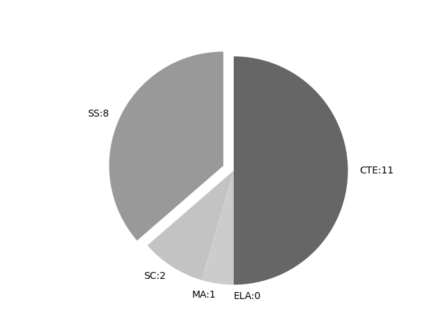

California
Report date: 2021-07-08
The frequency of all keywords found in this state's standards: 22
Comparable state score: 0.198 (median: .303, SD: .324)
The frequency above is the sum of all keywords found in all of this state's four core academic standards and the state's CTE/career standards. This total count is broken down by keyword and discipline area below.
On this site, 'comparable scores' are calculated as: keywords found divided by total words in the standards document(s) - multiplied by 100,000. The comparable scores attempt to normalize data, accounting for very different sizes of curriculum guidance documentation.
Frequencies by keyword or phrase:- Spatial: 21
- geographic information system: 1
- GIS: 0

Frequencies by discipline area: - SS: 8 Comp score: 4.931
- SC: 2 Comp score: 0.174
- MA: 1 Comp score: 0.05
- ELA: 0 Comp score: 0.0
- CTE: 11 Comp score: 0.142
Review the standards document(s) used in this machine search: external link
Examples of keyword use by discipline area (and document): - CTE
- enginearchit.pdf, page:41, position:1650
of countries into the world economy and the information, A1.0, A2.0, B9.0C1.0technological, and communications revolutions (e.g., television, satellites, computers).A3.0, A5.0Chronological and Spatial Reasoning – CSR1. Students compare the present w - hosptourrec.pdf, page:38, position:639
prod-B1.0, B11.0, B12.0C1.0, C4.0, C8.0ucts.12.2.10. Discuss the economic principles that guide the location of agricultural produc-B1.0, B11.0, B12.0C1.0, C4.0, C8.0tion and industry and the spatial distribution of transportation and retail facilit - hosptourrec.pdf, page:42, position:255
MatrixPATHWAYSA. B. C. HOSPITALITY, TOURISM, AND RECREATIONFood Science, Food Service Hospitality, Tourism, Dietetics, and and Hospitalityand RecreationNutritionChronological and Spatial Reasoning – CSR2. Students analyze how change ha - transportation.pdf, page:39, position:988
of the financial markets.A6.0B6.0C5.0, C7.0, C8.012.2.10. Discuss the economic principles that guide the location of agricultural production and indus-A1.0, A6.0B6.0C5.0, C7.0, C8.0try and the spatial distribution of transportation and retail facilit - bizfinance.pdf, page:38, position:1094
of the financial markets.B3.0, B4.0, B6.0 A5.0B8.0, B10.0, B11.012.2.10. Discuss the economic principles that guide the location of agricultural production and industry A1.0, A4.0and the spatial distribution of transportation and retail facilit - healthmedical.pdf, page:64, position:876
racial concentrations in the cities, Frostbelt-to-Sunbelt migration, international migration, decline of family farms, increases in out-of-wedlock births, and drug abuse.Chronological and Spatial Reasoning – CSRA2.0, A7.0A1.0, A2.0B1.0B1.0, - agnatural.pdf, page:51, position:1372
of pro˜t as the incentive to entrepre-neurs in a market economy.A1.0, A2.0, A7.012.2.10. Discuss the economic principles that guide the loca-tion of agricultural production and industry and the spatial distribution of transportation and retail facil - buildingconstruct.pdf, page:18, position:1500
stakes.B2.0 Demonstrate the use of survey and mapping equipment.B2.1 Apply conventional engineering and heavy construction measurement processes accurately (e.g., laser transits, laser levels, geographic information system [GIS] instruments) for surveying and plan devel - edchildfamily.pdf, page:49, position:589
Describe the functions of the financial markets.B1.012.2.10. Discuss the economic principles that guide the location of agricultural produc-B1.0, B9.0tion and industry and the spatial distribution of transportation and retail facilit - mktsalesservices.pdf, page:32, position:1744
the functions of the financial markets.A3.0B1.0C4.0, C5.0, C6.012.2.10. Discuss the economic principles that guide the location of agricultural production and B1.0C7.0, C8.0industry and the spatial distribution of transportation and retail facilit - mktsalesservices.pdf, page:34, position:1158
the integration of countries into the world economy and the information, A4.0B1.0C10.0technological, and communications revolutions (e.g., television, satellites, computers).Chronological and Spatial Reasoning – CSR1. Students compare the present w
- MA
- ccssmathstandardaug2013.pdf, page:16, position:1268
in combined sets, or counting the number of objects that remain in a set after some are taken away. (2) Students describe their physical world using geometric ideas (e.g., shape, orientation, spatial relations) and vocabulary. They identify, name,
- SC
- cangss-gr9-12-dci-3-2015.pdf, page:30, position:151
- cangss-gr6earth-mar2015.pdf, page:3, position:1559
does not include the identiÞcation and naming of minerals.]MS-ESS2-2. Construct an explanation based on evidence for how geoscience processes have changed EarthÕs surface at varying time and spatial scales. [ClariÞcation Statement: Emphasis is on
- SS
- hssstandards.pdf, page:2, position:381
reßection, and research skills:Chronological and Spatial ThinkingStudents place key events and people of the historical era they are studying in a chronological sequence and within a spatial context; they interpret time lines.Students - hssstandards.pdf, page:2, position:242
grade Þve.In addition to the standards for kindergarten through grade Þve, students demonstrate the following intellectual, reasoning, reßection, and research skills:Chronological and Spatial ThinkingStudents place key events and people of - hssstandards.pdf, page:6, position:1873
contemporary society.Students describe the physical and human geography and use maps, tables, graphs, photographs, and charts to organize information about people, places, and environments in a spatial context.Identify geographical features in their - hssstandards.pdf, page:13, position:461
six through eight.In addition to the standards for grades six through eight, students demonstrate the following intellectual reasoning, reßection, and research skills:Chronological and Spatial ThinkingStudents explain how major events ar - hssstandards.pdf, page:22, position:2618
and railroads (e.g., Henry Clays American System).List the reasons for the wave of immigration from Northern Europe to the United States and describe the growth in the number, size, and spatial arrangements of cities (e.g., Irish immigrants - hssstandards.pdf, page:25, position:729
nine through twelve.In addition to the standards for grades nine through twelve, students demonstrate the following intellectual, reasoning, reßection, and research skills.Chronological and Spatial ThinkingStudents compare the present with the pa - hssstandards.pdf, page:36, position:1999
in numerous states (e.g., the process of referendums, recall elections).Analyze trends in voter turnout; the causes and effects of reapportionment and redistricting, with special attention to spatial districting and the rights of minorities; and th - hssstandards.pdf, page:38, position:1497
entrepreneurs in a market economy.Describe the functions of the Þnancial markets.Discuss the economic principles that guide the location of agricultural production and industry and the spatial distribution of transportation and retail fac
{kind=link}